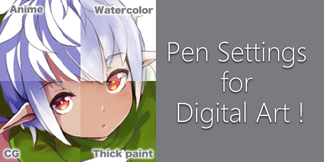

Hobby #1 GUITAR!

when i'm not hitting the books im hitting the strings. I may have a passion for music, particularly for guitars. I try to get in alot of practice but i often dont get to play as much as i would like to
I dont ever believe one day ill be a rock star, i just like playing guitar. Strumming the string just to vibe makes me feel happy. Although, playing guitar has left its mark on my left hand. I dont think i will ever be able to use any of the finger prints on my left hand. I wonder if that will evver become a big deal... hmmm... Its worth it still.
Hobby #2 Illustration and Animation!
Being an animation studio it should be no surprise that one of my hobbies is drawing or as it would be called, illustration
I have done both illustration and animation but i tend to lean more towards illustration than animation. I even got to handle some paid illustration work over the year and i can safely say I have an all time favorite program which is Clip studio
It's a digital illustration and animation software that leans more towards easter style animation which is what i am all about drawing!
Even tho I was taught and am capable of drawing different styles of media such as hyper realistic and even 3D modelling, this style is my passion. Even tho my teachers had to fight me over it ehe, sorry to the them for that
even tho this is technically more of a career or job i think of it as a hobby as ive been doing it before even the thought of it as a job. from drawing scribbles on paper at 14 to now where ive even invested alot of time and finances into it as my hobby!